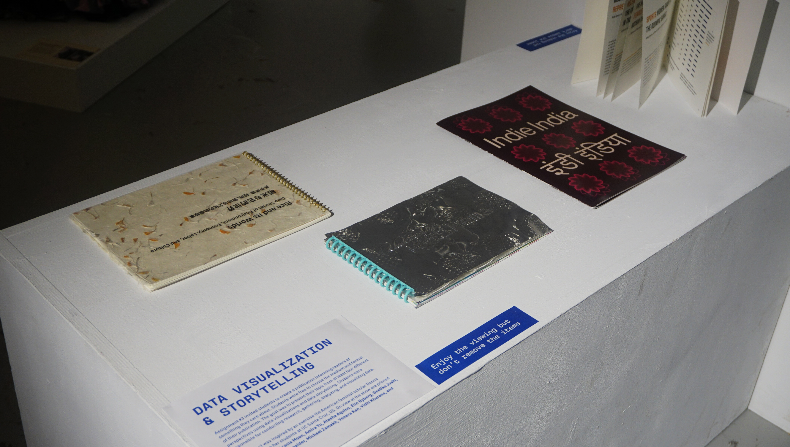
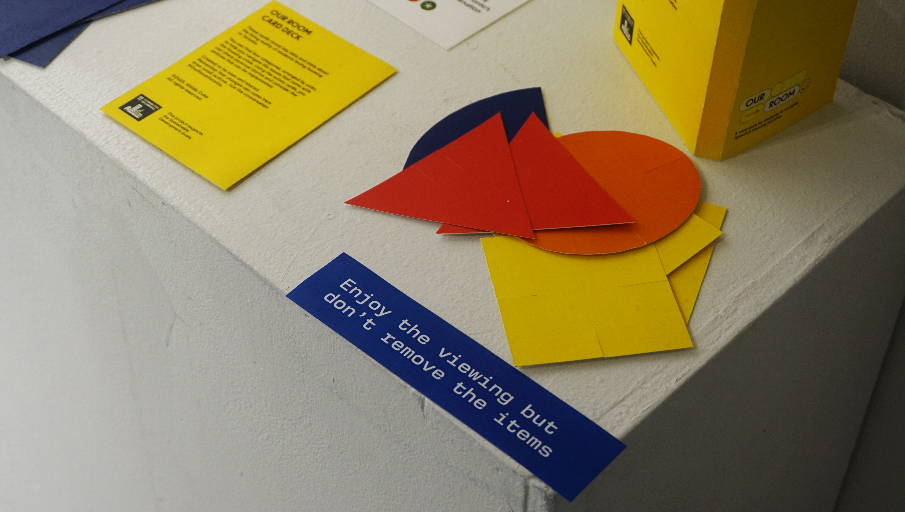
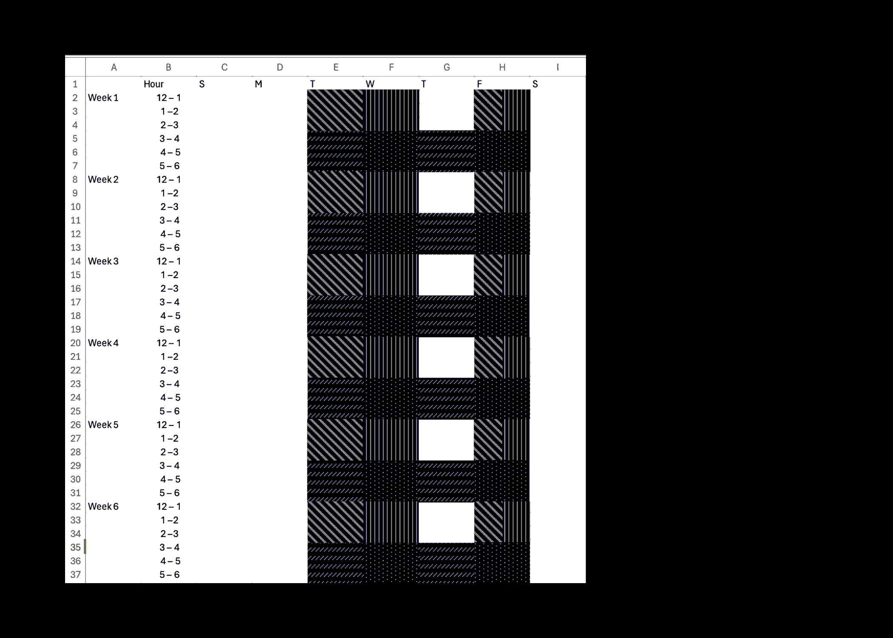
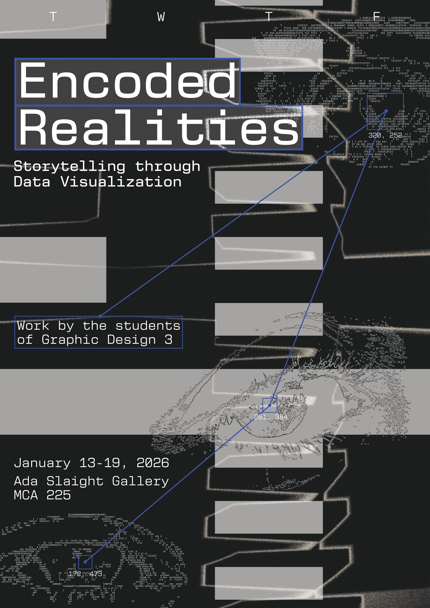

Encoded Realities is an exhibition showing data visualizations by the students of the Fall 2025 Graphic Design 3 cohort. With guidance from my professor Karin Von Ompteda, I created the name, the poster, and the visual identity of the exhibition.


Process

Throughout Graphic Design 3, we were mainly concerned with telling the stories we found within the data. With this exhibition poster, I wanted to tell the story of the students.
This process began in Excel (the program we spent hours in during this class) where I encoded the time slots of all four sections of Graphic Design 3 over the fall semester including reading week.
Each hour of class = one black cell. The poster becomes a "calendar" that records the hours us students dedicated to creating the work being exhibited.
The eyes are images of my friends' eyes converted into ascii art to reflect the variety of perspectives—or "Realities"—we explored through data vis.
The Final Poster
